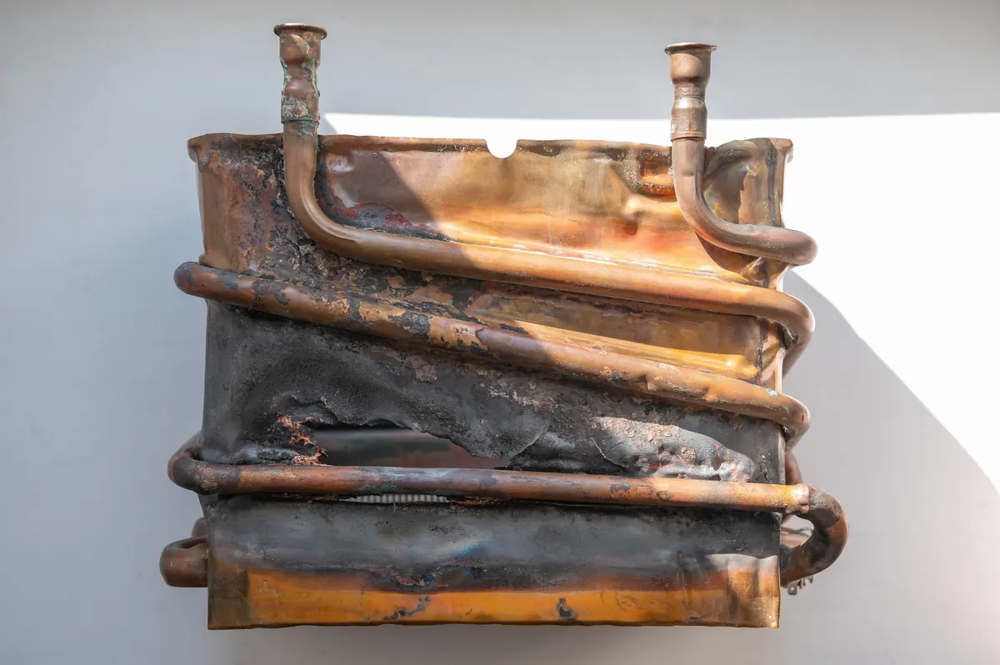

A new water heater is not just a replacement purchase - it can be a smart financial decision. If your current unit is aging, inefficient, or struggling to keep up with your household's needs, upgrading to a new water heater from Angle Stop Plumbing can deliver returns through lower energy costs, fewer repairs, better performance, and greater long-term value.
Here is how homeowners can think about the return on investment (ROI) of a new water heater.

Why ROI matters when replacing a water heater
Most homeowners think about the upfront cost first, and that makes sense. But the real value of a new water heater is not only in what you spend today - it is in what you may save and avoid spending later.
A new water heater can potentially help you:
- Reduce monthly energy bills with improved efficiency
- Avoid frequent repair costs on an older system
- Lower the risk of water damage from leaks or tank failure
- Improve hot water reliability for your household
- Increase long-term home value with updated plumbing equipment
When you look at the full picture, the investment often becomes easier to justify.
1. Compare the energy efficiency
One of the biggest factors in water heater ROI is energy use.
Older water heaters often work harder and use more energy to produce the same amount of hot water. Newer models are typically designed to perform more efficiently, especially when compared to units that are well past their prime.
For example, if your old water heater costs significantly more each month to operate, a more efficient replacement may gradually recover part of the purchase cost through energy savings over time.
Questions to consider:
- How old is your current water heater?
- Has your energy bill increased over time?
- Is your current system still operating efficiently?
- Would a newer model reduce energy consumption?
Even modest monthly savings can add up over the life of the unit.
2. Add up repair costs
If your current water heater has needed repairs more than once, that is a sign to look beyond the next service call.
Ask yourself:
- How much have I spent on repairs in the last 1-3 years?
- Is the unit nearing the end of its expected lifespan?
- Am I paying to keep an inefficient system alive?
Spending money repeatedly on an old water heater can reduce the value of holding onto it. In many cases, replacing the unit may make more financial sense than continuing to repair it.
A new system from Angle Stop Plumbing may help you shift from repeated repair costs to a more dependable long-term solution.
3. Factor in the risk of failure
ROI is not only about direct savings. It is also about avoiding major unexpected costs.
An older failing water heater can create expensive problems such as:
- Water damage to floors or walls
- Emergency plumbing service costs
- Loss of hot water at inconvenient times
- Damage to stored items or nearby materials
If a new water heater helps you avoid even one major leak or breakdown, that alone can change the financial picture significantly.
Preventing a costly emergency is a real return.
4. Consider the lifespan of the new unit
Another important part of ROI is how long the new water heater is expected to serve your home.
A properly selected and professionally installed unit can provide years of dependable use. That means your investment is spread across a long period of better efficiency, better comfort, and fewer disruptions.
A simple way to think about it:
If the unit saves you money, reduces repair needs, and improves performance year after year, the value builds steadily.
5. Think beyond money alone
Not every return shows up as a line item on a bill.
A new water heater can also provide:
- More reliable hot water
- Better performance for a busy household
- Greater peace of mind
- Confidence in your plumbing system
- Improved day-to-day comfort
These benefits may not always be easy to measure, but they still matter. For many homeowners, consistent hot water and fewer unexpected problems are a strong part of the overall return.
6. A simple ROI formula homeowners can use
A practical way to estimate ROI is:
Example categories to include:
- Annual energy savings
- Reduced repair expenses
- Avoided emergency replacement costs
- Reduced risk of water damage
- Value of improved efficiency and reliability
You do not need an exact number to make a smart decision. Even a basic estimate can help you compare the cost of replacing now versus waiting.
Example scenario
Let us say a homeowner is deciding whether to replace an aging water heater.
Current situation:
- Higher monthly utility costs due to inefficiency
- Repeated repair needs
- Increased risk of breakdown
- Inconsistent hot water performance
New water heater benefits:
- Lower energy use
- Fewer repair concerns
- More reliable hot water
- Lower chance of sudden failure
In that situation, the return comes from both monthly savings and reduced future risk. Over time, the homeowner may recover much of the investment while also enjoying better daily performance.
Why buy from Angle Stop Plumbing
Choosing the right installer matters just as much as choosing the right equipment.
With Angle Stop Plumbing, homeowners can move forward with confidence knowing they are investing in a plumbing upgrade that supports:
- Professional guidance
- Reliable installation
- Better system performance
- Long-term home comfort
- Greater confidence in the value of the upgrade
A new water heater is not just about replacing what failed. It is about improving how your home works every day.
Final thoughts
Calculating the return on investment for a new water heater means looking at more than the purchase price. When you factor in energy efficiency, repair savings, reduced failure risk, and improved comfort, a replacement can be a smart long-term move.
If your current unit is aging or becoming unreliable, investing in a new water heater from Angle Stop Plumbing may help you save money over time while improving the performance and dependability of your home's hot water system.
A good water heater does more than heat water - it protects comfort, supports efficiency, and adds value to your home.